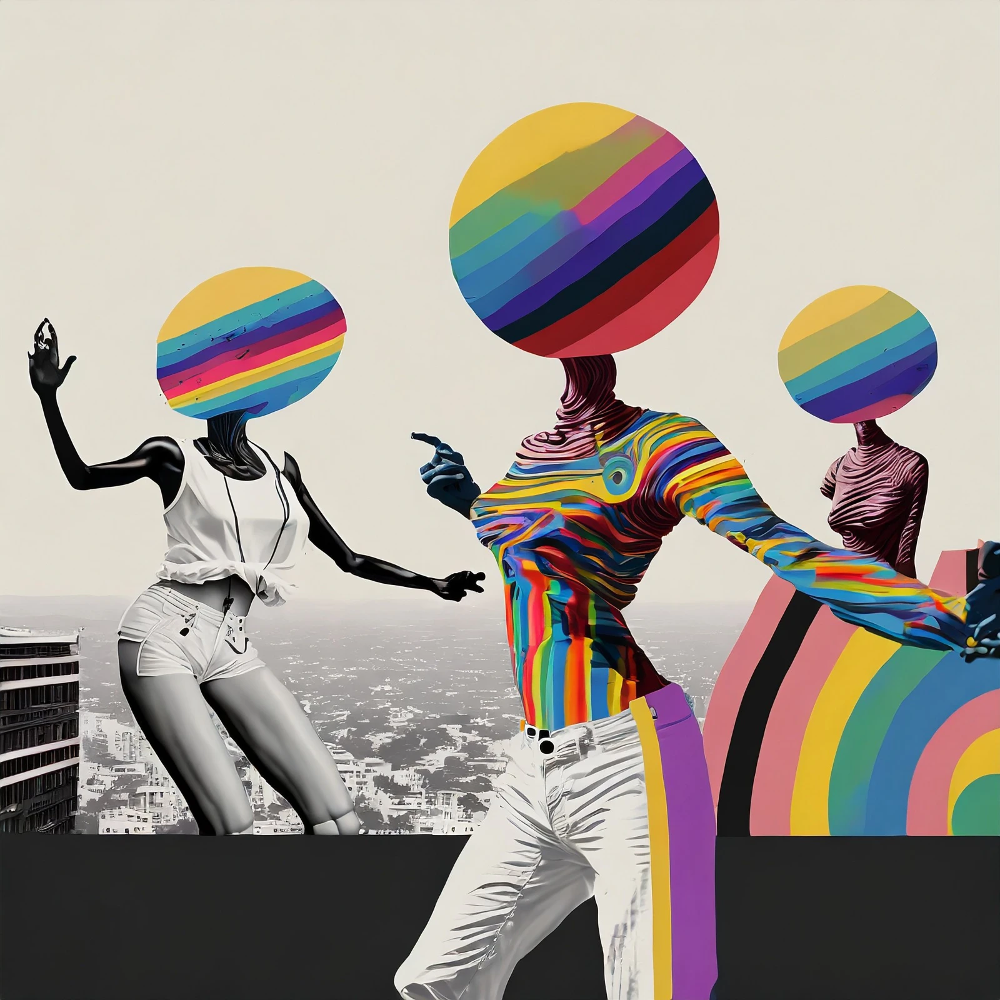
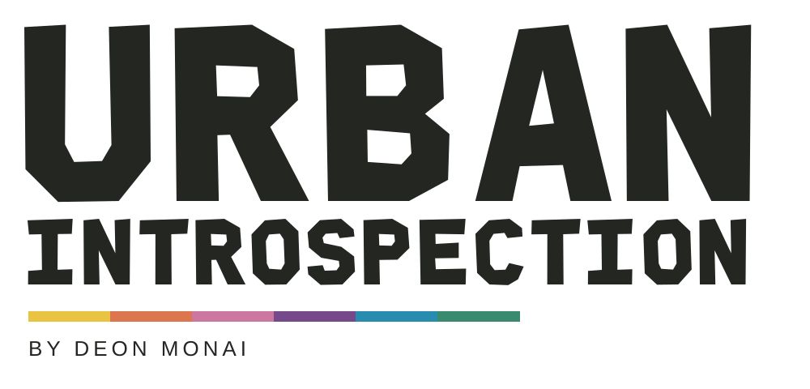
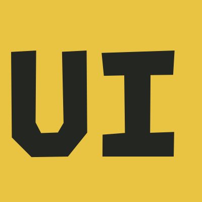

A LITTLE
STRANGE.
ALL YOURS.
A complete visual identity for Urban Introspection by Deon Monai. Original artwork leads. Cut-paper lettering, warm paper, city ink and full-color accents do the rest.
Get the complete brand kit ↓
A name with presence.



Stacked wordmark, ink and paper variants, a compact UI monogram and favicon. SVG masters and PNG exports are included.
Meet ROOFTOP CUT.
An original display alphabet with irregular edges, tilted counters and a cut-paper rhythm. Type something below and make yourself at home.
0123456789 & !
Paper. Ink. Full color.
The warm base and rainbow accents come straight from the world of the artwork. Tap a swatch to copy its color.
A little more personal.
Editable SVG layouts and PNG exports. The kit also includes a downloadable reminder graphic, thank-you cards, and hang tags with space for each piece’s details.
Good art. Strange finds. Second lives.
KEEP THE DEFECTS.
The strange anatomy, unexpected edges, imperfect textures and odd little details belong. Preserve the original art. Move the presentation around it.
MAKE IT PERSONAL.
Tell people what caught your eye. Show the wear. Explain the rework. Invite curiosity. Let every art piece, garment and found object have its own story.
The storefront is an interactive preview. Add real inventory, confirm prices and sizes, and connect payment and fulfillment before opening for orders. All first-person copy is a proposed draft for Deon to personalize.
Back to the shop ↗